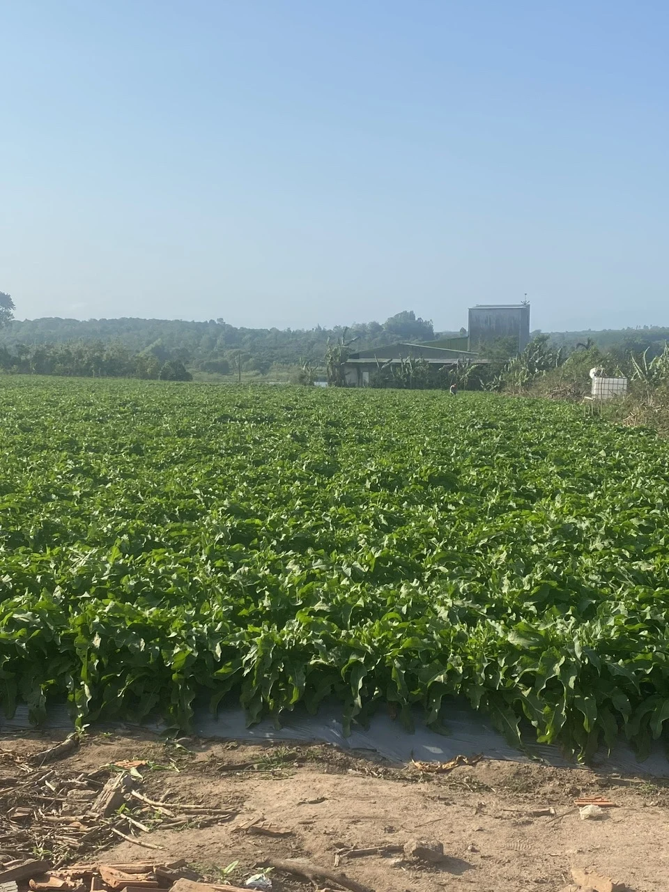
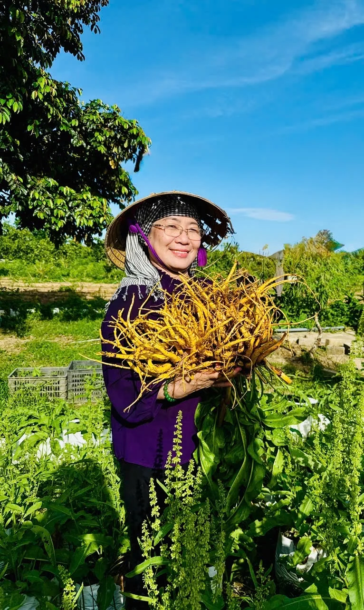

Một góc nhìn từ chính khu trồng
Trong ảnh và hai đoạn video do chủ hộ cung cấp, cây được bố trí theo hàng, có lối đi giữa các luống và lớp màng phủ trên mặt luống. Góc quay đi dọc theo hàng cây giúp người xem nhận ra khoảng cách, tán lá và cách tổ chức không gian trồng rõ hơn so với một ảnh chụp tổng thể.
Đây là giá trị của tư liệu tại chỗ: người đọc có thể tự quan sát cảnh quan và công việc. Bộ ảnh không kèm ngày chụp hoặc nhãn địa điểm từng khung hình, vì vậy không gán riêng từng ảnh cho Sóc Sơn hay Ứng Hòa.
Đối chiếu nguồn: [1]
Chăm sóc là một phần của câu chuyện nguyên liệu
Ảnh chụp cho thấy người làm vườn cúi xuống bên hàng cây. Trong video thứ hai, hoạt động chăm sóc xuất hiện giữa không gian vườn rộng. Những chi tiết ấy đưa con người trở lại trung tâm câu chuyện: một vùng nguyên liệu không chỉ được mô tả bằng diện tích, mà còn bằng thời gian và sự hiện diện của người chăm sóc.
Từ hình ảnh có thể mô tả bố trí luống và thao tác đang diễn ra; để viết thành hướng dẫn kỹ thuật, cần thêm nhật ký về giống, thời điểm trồng, nước tưới, phân bón và từng đợt chăm sóc. Bài viết này giới thiệu tư liệu quan sát, không biến một khoảnh khắc thành quy trình canh tác áp dụng cho mọi vườn.
Đối chiếu nguồn: [1]
Ba héc-ta tại Hà Nội, theo thông tin chủ hộ
Hộ kinh doanh Đỗ Thị Tuyết cung cấp thông tin tổng diện tích trồng 3 ha, gồm 2 ha tại Sóc Sơn và 1 ha tại Ứng Hòa. Những con số này tạo bối cảnh cho phần giới thiệu vùng nguyên liệu; ảnh và video bổ sung trải nghiệm nhìn thấy hàng cây, người chăm sóc và nguyên liệu sau khi đưa khỏi đất.
Nguồn giống, theo chủ hộ, được nhập và trồng với sự cho phép của MS Thiên Ngọc, gắn với GS.TS Võ Thị Ngọc. Người đọc có thể đối chiếu câu chuyện nghiên cứu giống trong bài báo được dẫn ở cuối trang và tìm hiểu thêm ở chuyên mục nguồn giống của website.
Từ nhật ký vườn đến Ngự Vị Nữ Hoàng Tửu
Khi giới thiệu Ngự Vị Nữ Hoàng Tửu, câu chuyện vùng trồng giúp người mua hiểu thêm nền tảng nguyên liệu mà hộ kinh doanh đang phát triển. Sự kết nối có ý nghĩa nhất khi đi cùng hồ sơ của từng lô: nguyên liệu lấy ở đâu, dùng bộ phận nào, được xử lý và phối hợp như thế nào.
Bộ tư liệu hiện tại làm phong phú câu chuyện trồng và chăm sóc. Nó không thay thế hồ sơ truy xuất của từng bình rượu. Vì thế, website đặt ảnh vườn trong mạch kể về nguyên liệu, còn dung tích và giá được trình bày tại từng trang sản phẩm để người đọc tiện đối chiếu.
Đối chiếu nguồn: [1]


